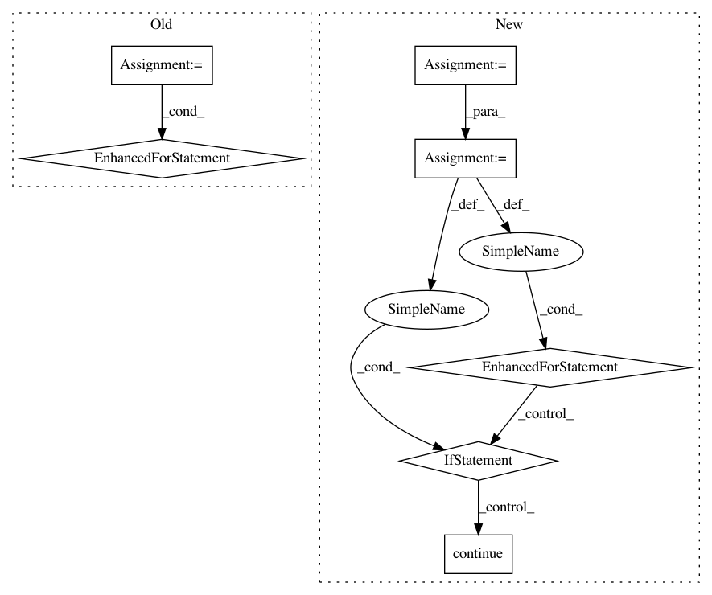

a908909495f00c61b52dd184a6275dd25abd0818,networkml/featurizers/funcs/host.py,HostBase,_tshark_ports,#HostBase#,120
Before Change
mac_row_ports = {}
def port_priv(port):
return port < 1024
for ip_proto in ("udp", "tcp"):
lowest_ports = self._lowest_ip_proto_port(mac_df, ip_proto)
for field_name, ports, wk_ports in (
("priv", {port for port in lowest_ports if port_priv(port)}, self.WK_PRIV_TCPUDP_PORTS),
("nonpriv", {port for port in lowest_ports if not port_priv(port)}, self.WK_NONPRIV_TCPUDP_PORTS),
):
port_flags = {port: int(port in ports) for port in wk_ports}
port_flags.update({"other": int(bool(lowest_ports) and not ports.issubset(wk_ports))})
mac_row_ports.update({
"tshark_%s_%s_port_%s_%s" % (ip_proto, field_name, port, suffix): present for port, present in port_flags.items()})
return mac_row_ports
def _tshark_ipversions(self, mac_df):
try:
After Change
mac_row_ports = {}
def port_priv(port):
return port < 1024
for ip_proto_num, proto_df in mac_df.groupby("ip.proto"):
ip_proto = TCP_UDP_PROTOS.get(ip_proto_num)
if ip_proto is None:
continue
lowest_ports = self._lowest_ip_proto_port(proto_df, ip_proto)
for field_name, ports, wk_ports in (
("priv", {port for port in lowest_ports if port_priv(port)}, self.WK_PRIV_TCPUDP_PORTS),
("nonpriv", {port for port in lowest_ports if not port_priv(port)}, self.WK_NONPRIV_TCPUDP_PORTS),
):
port_flags = {port: int(port in ports) for port in wk_ports}
port_flags.update({"other": int(bool(lowest_ports) and not ports.issubset(wk_ports))})
mac_row_ports.update({
"tshark_%s_%s_port_%s_%s" % (ip_proto, field_name, port, suffix): present for port, present in port_flags.items()})
return mac_row_ports
def _tshark_ratio_ports(self, mac_df):
mac_row_ports = {}
In pattern: SUPERPATTERN
Frequency: 3
Non-data size: 7
Instances
Project Name: CyberReboot/NetworkML
Commit Name: a908909495f00c61b52dd184a6275dd25abd0818
Time: 2020-04-08
Author: josh@vandervecken.com
File Name: networkml/featurizers/funcs/host.py
Class Name: HostBase
Method Name: _tshark_ports
Project Name: jazzband/django-debug-toolbar
Commit Name: 9514b001889e7331d80cc8c4f168b284a27825e0
Time: 2011-05-10
Author: dcramer@gmail.com
File Name: debug_toolbar/utils/__init__.py
Class Name:
Method Name: tidy_stacktrace
Project Name: thoughtworksarts/EmoPy
Commit Name: 09f8d5539312770efbaa87eb6e0b9b150973abc7
Time: 2017-12-19
Author: angelica.perez37@gmail.com
File Name: riot_neuralnet/main.py
Class Name:
Method Name: prepare_training_data